Timeline
Basic demo
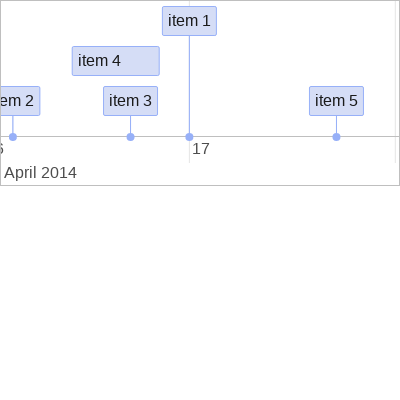
dataHandling
Data serialization
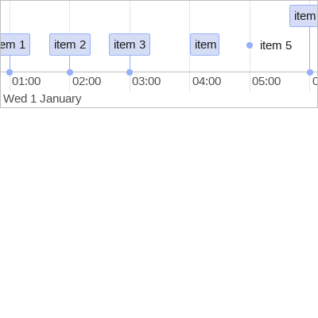
External data
editing
Custom snapping
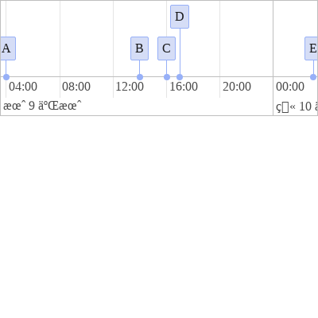
Individual editable items
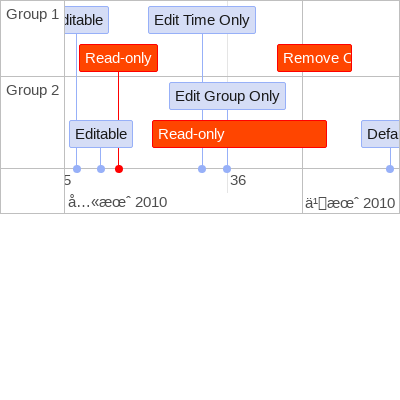
Individual editable items (override)
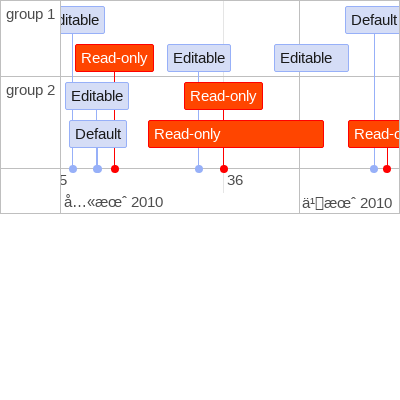
itemsAlwaysDraggable Option
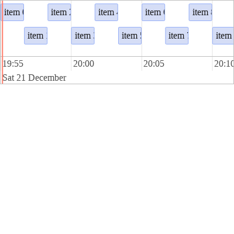
Manipulation callbacks
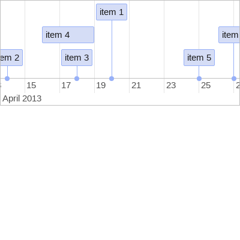
Manipulation example
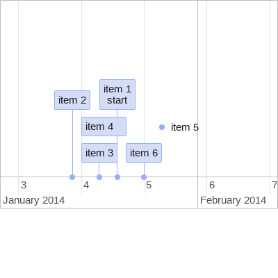
Tooltip on item onUpdateTime Option
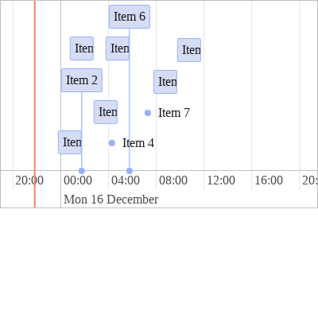
Update data on event
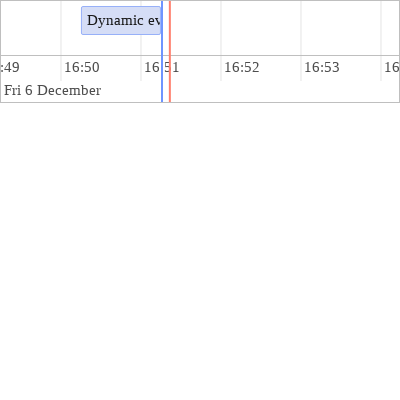
groups
Editable Groups
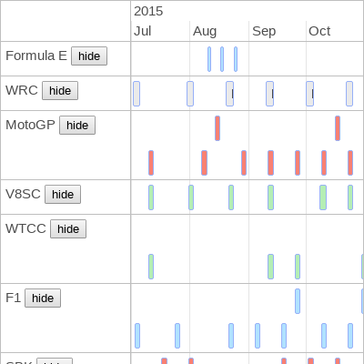
Group example
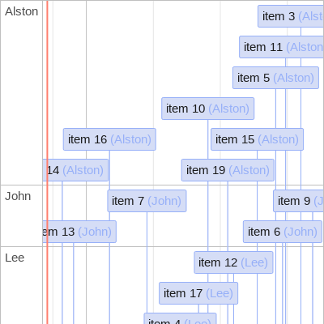
Groups ordering
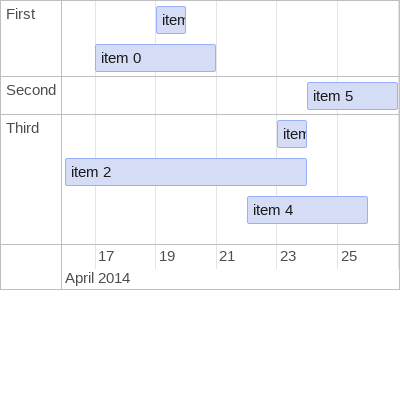
Nested Groups example
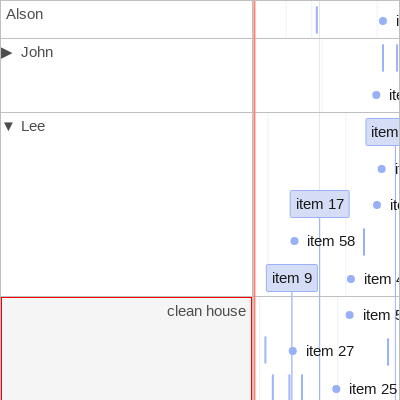
Nested Groups example (3 levels)
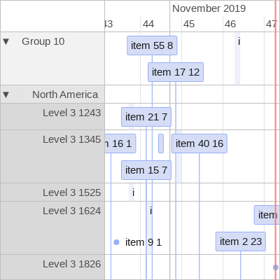
Subgroup Visibility
Subgroups
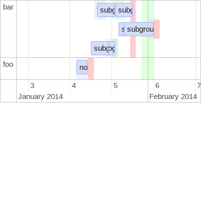
Vertical Items Hide
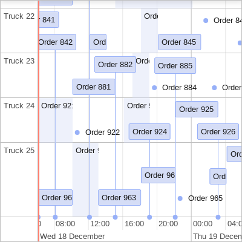
Visible Groups
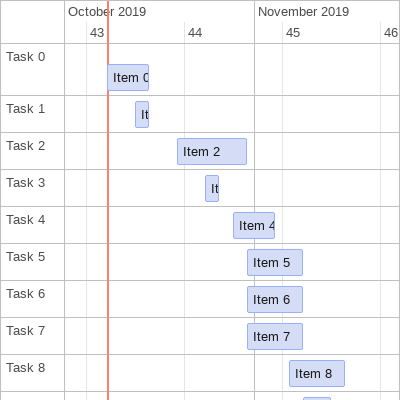
interaction
Animate window
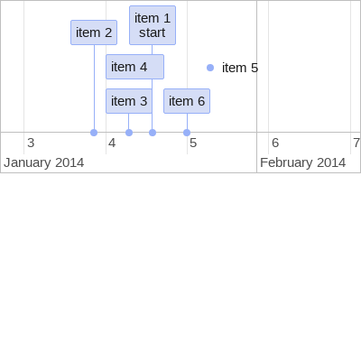
Click to use
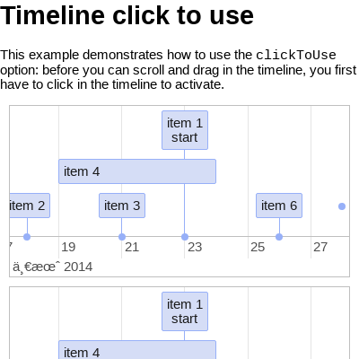
Event listeners
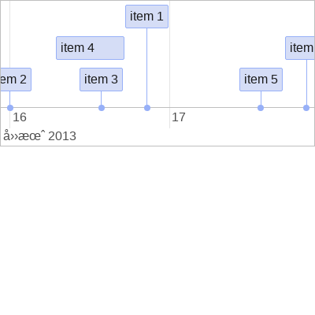
Limit move and zoom
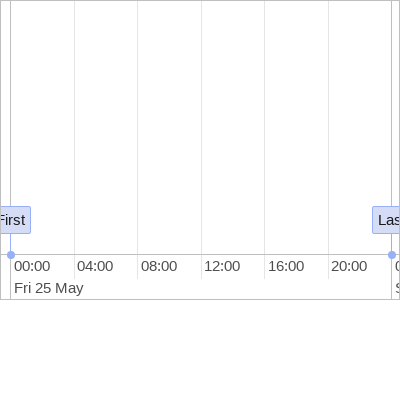
navigation menu
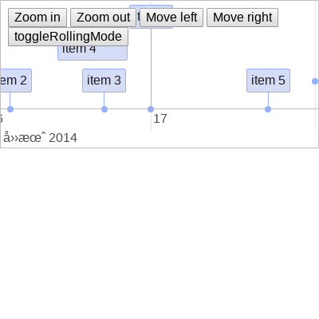
rolling mode Option
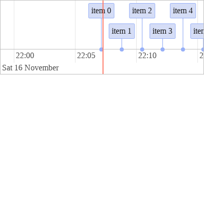
Select items
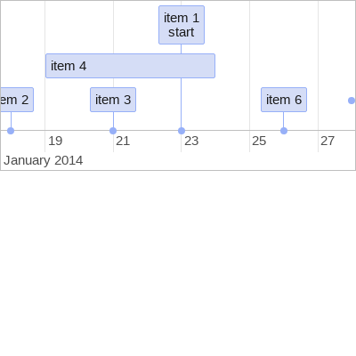
Sequential Selection
Specific Item Selectability
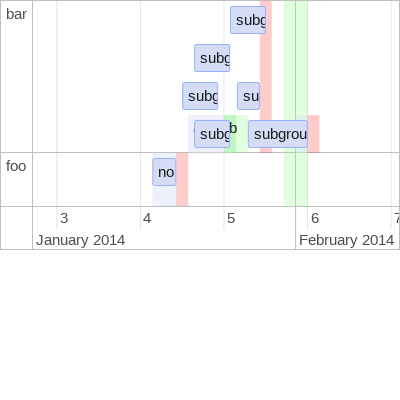
items
Background areas
Background areas with groups
Dynamic Content
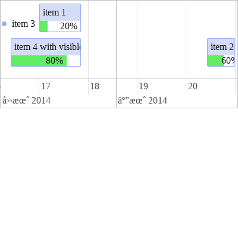
expected vs actual times items
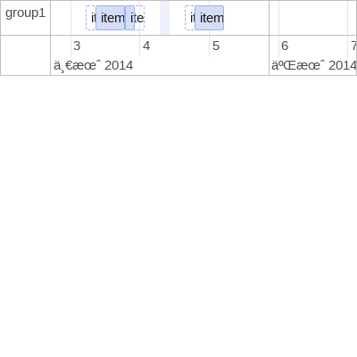
HTML data
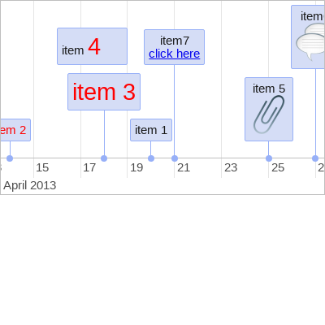
Item ordering
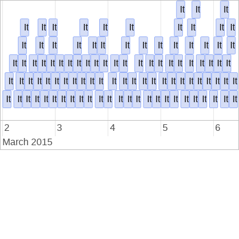
Point items
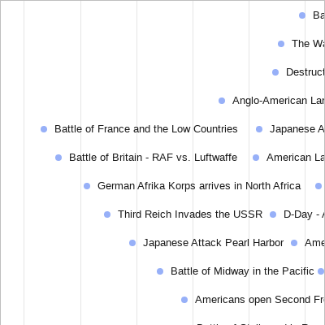
Range overflow
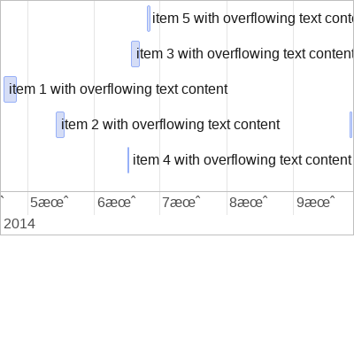
Tooltip Template
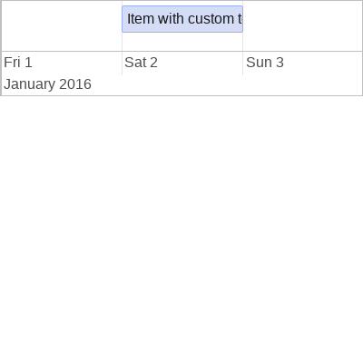
Tooltips
markers
Editable markers
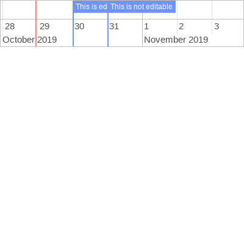
Marker events
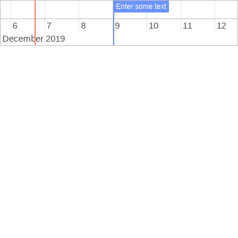
Markers example
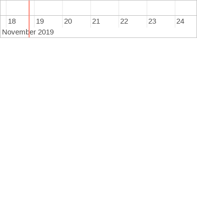
other
A lot of grouped data
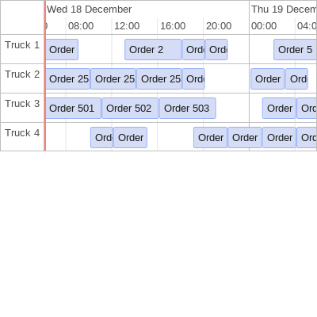
Clustering example
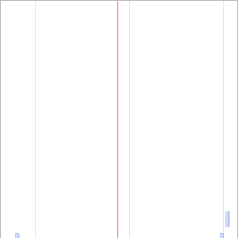
Custom function label format example
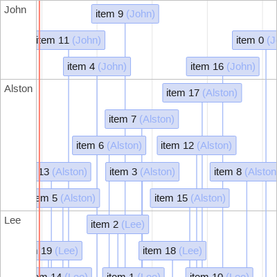
Custom Localization
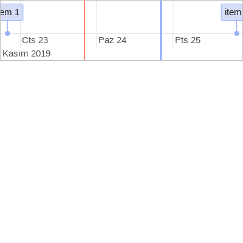
Data Attributes
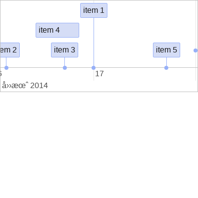
Data Attributes All
Drag & Drop
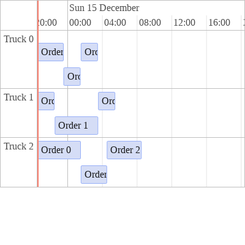
Hiding periods
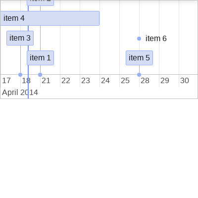
Horizontal Scroll Option
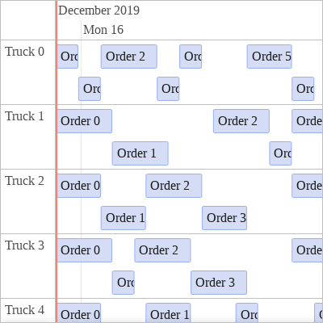
Loading screen example
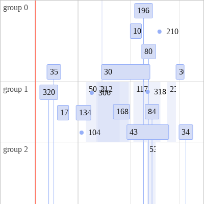
Localization
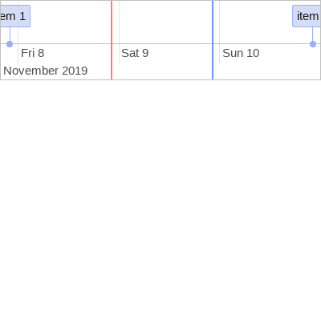
onTimeout example
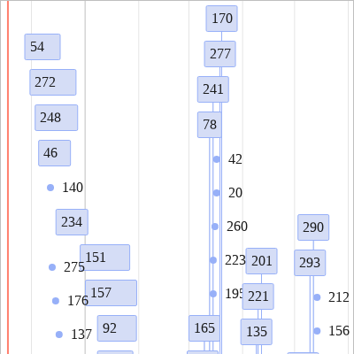
performance
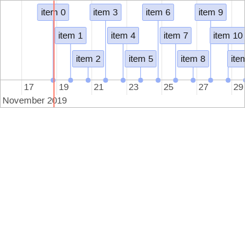
React 15 Components in templates
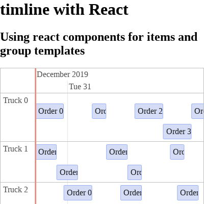
React 16 Components in templates
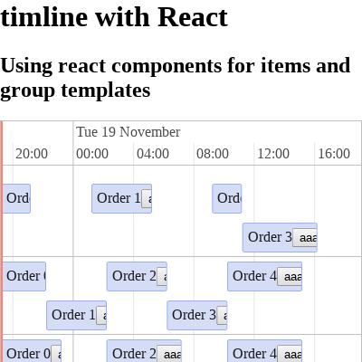
React Components in templates
require.js demo
RTL example
Show current and custom time bars
Show current and custom time bars tooltip
Stress Performance example
Time zone
Vertical Scroll Option
styling
Custom styling
Grid styling
Item class names
Orientation
Templates
Week styling